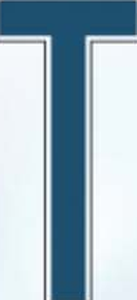
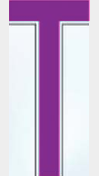

NWT Spectacular lettering
The official 2013 Gazette specimen shows NWT123. These six observed characters use one smooth heavy condensed construction, with a separate pale outlined shoulder. Numeric production plates use six digits; unobserved 0 and 4–9 remain compatible constructed fallbacks with unconfirmed original tooling.
N has deep diagonal notches; W retains its raised center peak and shorter lower notch; 1 has a narrow flagged paint body within a full-width cell; 2 has a curved diagonal and squared foot; 3 has distinct unequal curved bowls.
Open the plate · Official Gazette source, PDF page 47 · Recorded dimensions
Pale aurora background · tree and bear alignment
The new supplied image replaces the wilderness background. A single proportional placement aligns the tall tree on the left and the bear on the right with the official illustration. The original colours are preserved; aurora and rock contours remain a rendition.
Recorded tree and bear positions · Current full-plate reconstruction
This comparison uses NWT123 to match the reference illustration. The issued production preset remains numeric. The reference’s French decal instruction is omitted from the reproduction.
Approximate dark silhouette anchor comparison on the 600 × 300 plane; each checked anchor is within two units of the reference. The uploaded artwork is scaled uniformly, without shifting individual objects.Every observed character
Shape comparisons match painted body height and center only. Width remains native; the source shoulder is visible in the original crops but excluded from blue-body threshold measurements.
N
Original illustration cropHeight/center matched overlay
Body W/H: source 0.457 · reproduction 0.460. Fixed advance/cap 0.48.
Approximate blue-body threshold overlap 0.947; detached shoulder lines excluded.W
Original illustration cropHeight/center matched overlay
Body W/H: source 0.450 · reproduction 0.450. Fixed advance/cap 0.48.
Approximate blue-body threshold overlap 0.933; detached shoulder lines excluded.T

Original illustration crop
Height/center matched overlayBody W/H: source 0.457 · reproduction 0.460. Fixed advance/cap 0.48.
Approximate blue-body threshold overlap 0.933; detached shoulder lines excluded.1
Original illustration cropHeight/center matched overlay
Body W/H: source 0.177 · reproduction 0.180. Fixed advance/cap 0.48.
Approximate blue-body threshold overlap 0.924; detached shoulder lines excluded.2
Original illustration cropHeight/center matched overlay
Body W/H: source 0.457 · reproduction 0.460. Fixed advance/cap 0.48.
Approximate blue-body threshold overlap 0.892; detached shoulder lines excluded.3
Original illustration cropHeight/center matched overlay
Body W/H: source 0.453 · reproduction 0.450. Fixed advance/cap 0.48.
Approximate blue-body threshold overlap 0.873; detached shoulder lines excluded.Proposed native run: center 257, baseline 195.5, cap height 106, all advances 48 cap units and tracking 19. Outer and pale shoulder strokes are 3.5 and 2 cap units respectively. This is a visual reconstruction, not a recovered commercial font or certified tooling master.